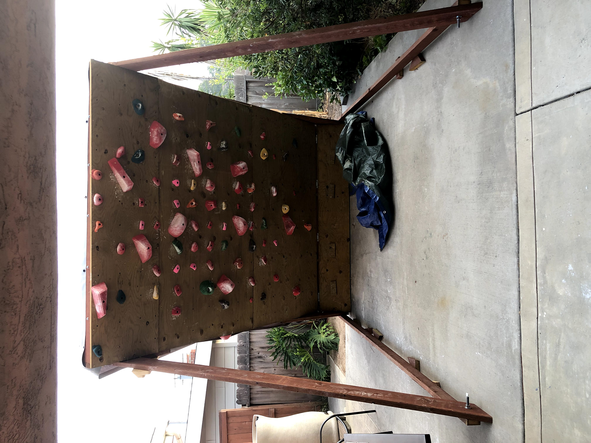

Projects I've made
Rock Climbing Wall
Over the past few months, COVID-19 has greatly affected my access to both the outdoors and my climbing gym. In order to stay active I decided to build my own home wall so that I can keep up my training at home. I began to research designs and plans for my climbing wall, however, It was difficult to find detailed plans that were free. So, I decided to make my own plans based off a video from a youtuber by the name of Climber Dad. He gave some of the dimensions and what he would do differently. I decided to follow his advice and started drawing out the plans. It took me a few days to get enough plans together so that I could make a cost analysis sheet. Once I had the funds to make it, I went and bought all the lumber and supplies that I would need. Then, over the next week with a power drill and a few friends, we constructed an overhanging forty-five degree wall. Once the holds came in we put them up on the wall to complete the build. I have been climbing on it almost every other day since I built it.